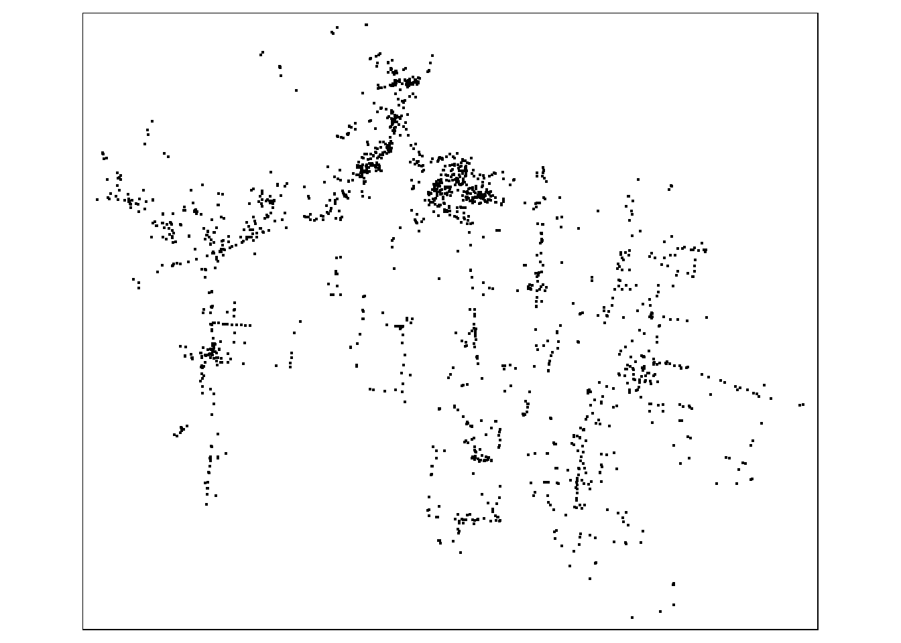
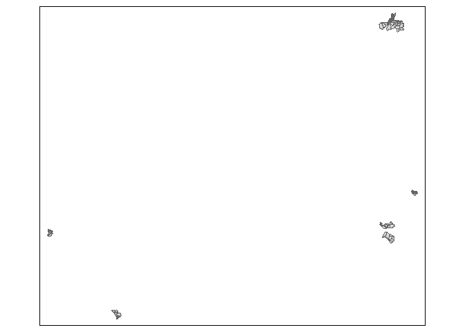

Overview
This packages combines data collected as part of ?????? conducted in Haiti. The projects were supported by SOIL at ??????.
Installation
You can install the development version of cbssuitabilityhaiti from GitHub with:
# install.packages("devtools")
devtools::install_github("openwashdata/cbssuitabilityhaiti")Alternatively, you can download the individual datasets as a CSV or XLSX file from the table below.
| dataset | CSV | XLSX |
|---|---|---|
| okap | Download CSV | Download XLSX |
| mwater | Download CSV | Download XLSX |
Projects
mWater
(One sentence) Evaluating the potential of ……..
Data
Description of the Data. When/Where it was collected. For how long.
The package provides access one data set.
library(cbssuitabilityhaiti)The mwater data set has 7 variables and 1849 observations. For an overview of the variable names, see the following table.
mwater| variable_name | variable_type | description |
|---|---|---|
| latitude | double | Lattitude coordinate |
| longitude | double | Longitude coordinate |
| administra | character | Communal section- smallest administrative unit in Haiti |
| type | character | Type of water access point |
| date_added | double | Date water access point was added to mWater |
| datasets | character | Dataset in mWater that point is part of, including organizaiton that is responsible for data |
| geometry | list | Geospatial data of the different access points that were added to mWater |
A small visualisation of this data set

Okap
(One sentence) Evaluating the potential of ……..
Data
Description of the Data. When/Where it was collected. For how long.
The package provides access one data set.
library(cbssuitabilityhaiti)The okap data set has 13 variables and 198 observations. For an overview of the variable names, see the following table.
okap| variable_name | variable_type | description |
|---|---|---|
| neighborho | double | Unique identifying number for each neighborhood unit |
| name | character | Name of each nieghborhood unit |
| sup_km2 | double | Area of neighborhood in square km |
| cte | character | Name of commune (administrative unit in Haiti) |
| economy | character | Categorical socioeconomic status (low, medium) |
| sup_bati_km2 | double | area of neihborhood covered by buildings in square kilometers |
| density | integer | Categorical population density (least dense, somewhat dense, dense, very dense, most dense) |
| aptitude | character | suitability of the site for a wastewater treatment system |
| zoning | character | “group” if collective or grouped sanitation is possible in short term. |
| latrine | character | Suggested pit latrine and septic allowance (allowed, not allowed) |
| density_ra | double | Catgoriccal population density according to the description of the variable “density” (values from 1 to 5) |
| economy_nu | double | Categotical socioeconomic status according to the description of the variable “economy” (1=low, 2 = medium) |
| geometry | list | Geospatial data of the neighborhood stored as a polygon |
A small visualisation of this data set

Examples
This is a basic example which shows you how to use the data:
library(cbssuitabilityhaiti)
## basic example codeLicense
Data are available as CC-BY.
Citation
Please cite using:
citation("cbssuitabilityhaiti")
#> Um Paket 'cbssuitabilityhaiti' in Publikationen zu zitieren, nutzen Sie
#> bitte:
#>
#> Loos S, Lubeck-Schricker M, Kramer S (????). _cbssuitabilityhaiti:
#> The Package contains data from the Soil projects in Haiti_. R package
#> version 0.0.0.9000.
#>
#> Ein BibTeX-Eintrag für LaTeX-Benutzer ist
#>
#> @Manual{,
#> title = {cbssuitabilityhaiti: The Package contains data from the Soil projects in Haiti},
#> author = {Sebastian Camilo Loos and Maya Lubeck-Schricker and Sasha Kramer},
#> note = {R package version 0.0.0.9000},
#> }Additional data use information
Anyone interested in publishing the data:
World Bank flood extent data (
FLOOD_EXTENT_DATASET_NAME) should be attributed with “Plan d’Élaboration propre basée sur les données de la Banque Mondiale: Inondation de Récurrence (5 ans / 25 ans / 100 ans)”Sanitation zoning assessment data (
okap) should be attributed with “These data were developed under the USAID Water and Sanitation Project in collaboration with the Cap-Haitian municipal government and DINEPA. These data do not reflect the opinion of USAID or the US Government.”